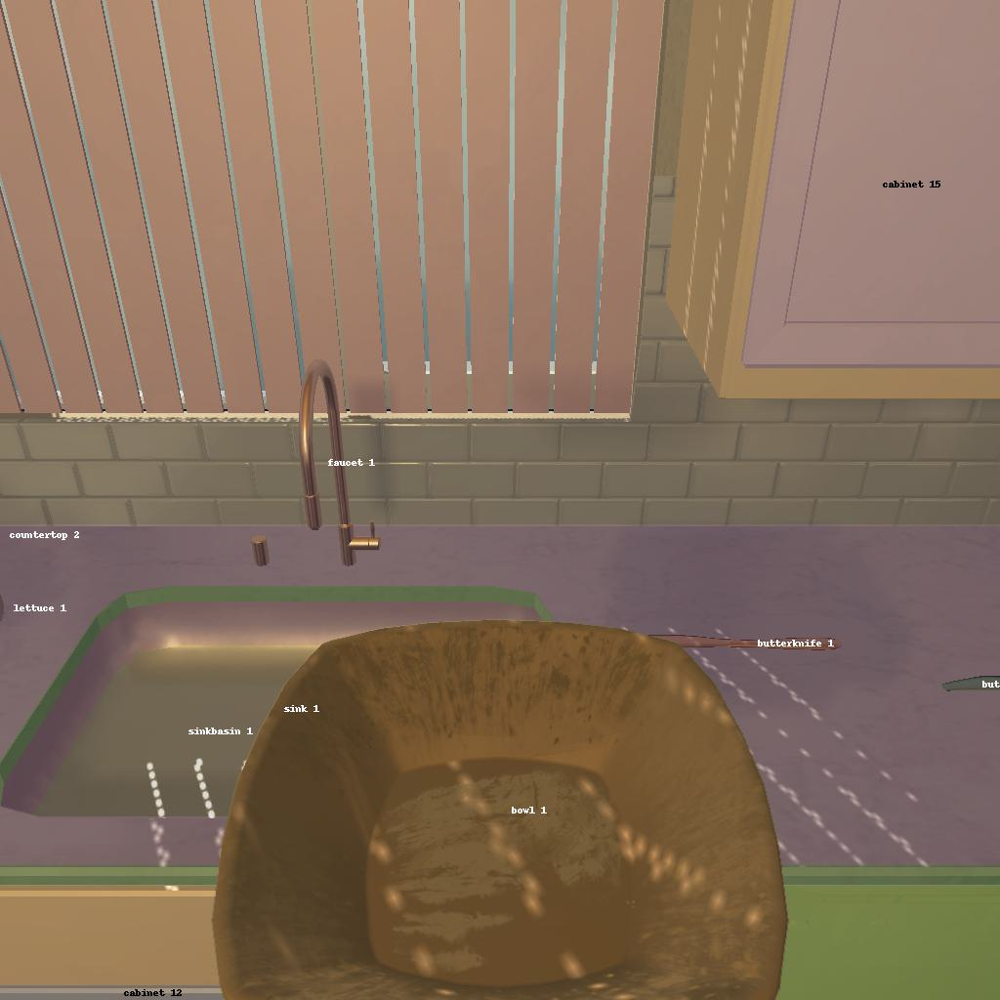
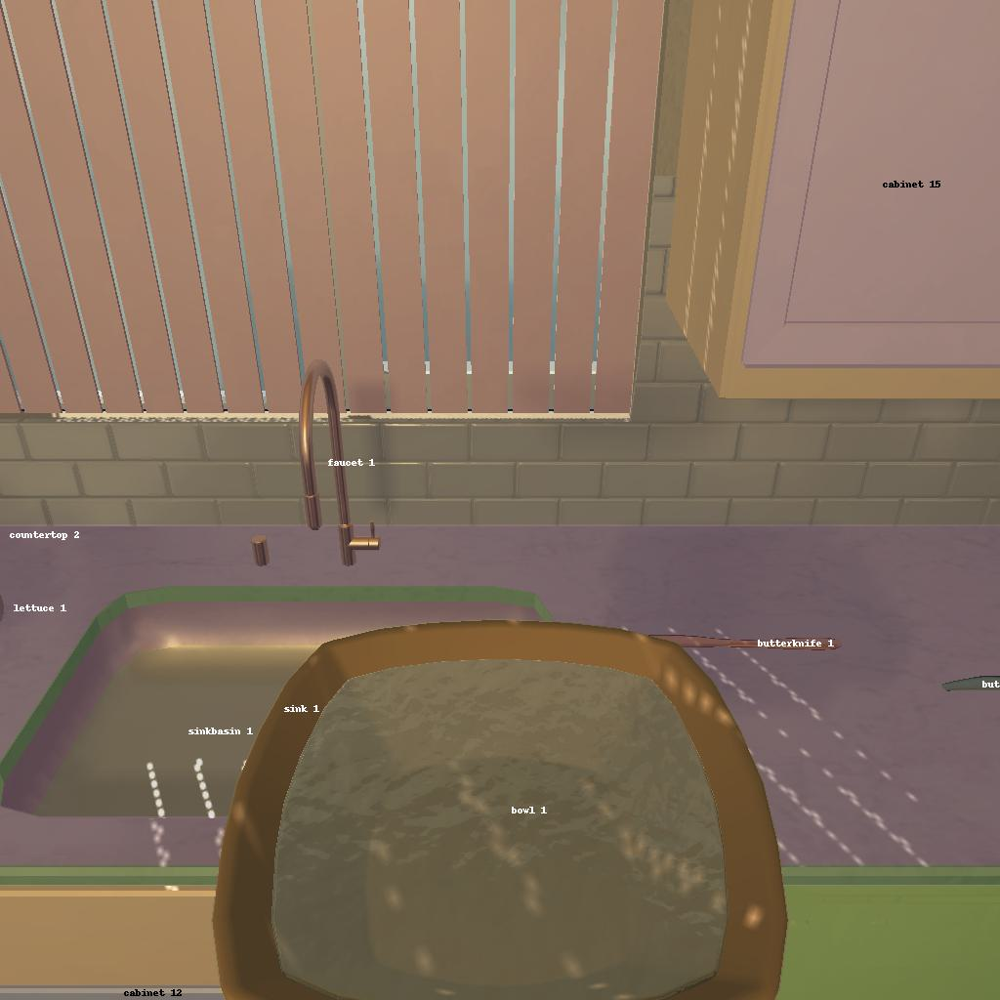

---------------------------------------------------------task: 10---------------------------------------------------------
--------------------------------------------------------------------------------------------------------------------------------------------------------------------
--------------------------------------------------------------------------------------------------------------------------------------------------------------------
Step:--------------------------------------------------------------------------9-------------------------------------------------------------------------------
----------------------------------------
VLM Prompt:
Image1:
Image2:
**Instruction**
1. Analyze the provided image to identify all visible household objects, focusing on those relevant to the task description "clean some plate and put it in countertop."
2. Use the analysis of the image and the task hint "The agent must find an object of the desired type, pick it up, go to a sink or a basin, clean the object with a sink or basin, and then find the correct location to place it and put it down there. The agent does not need to use soap bottle or faucet to clean the object, and the agent just needs to do action that is "clean the object with the sink or sink basin"." to answer the question: what is the most reasonable action in the choices for the task description "clean some plate and put it in countertop"?
4. Decide and write the answer using the template: The answer is: (i): , where i is the real number. If there is no desired object in the image, search every place based on **Initial Observation** to find the object. And if no one is exactly correct, choose a similar answer.
**Initial Observation**
You are in the middle of a room. Looking quickly around you, you can see cabinet (1-20), toaster (1), microwave (1), garbagecan (1), countertop (1-2), drawer (1-4), stoveburner (1-4), sinkbasin (1), sink (1), fridge (1), diningtable (1), coffeemachine (1)
**Answer Choices**
(1): go to cabinet 1
(2): go to cabinet 3
(3): go to toaster 1
(4): go to cabinet 4
(5): go to cabinet 5
(6): go to microwave 1
(7): go to garbagecan 1
(8): go to countertop 1
(9): go to drawer 1
(10): go to cabinet 6
(11): go to cabinet 7
(12): go to drawer 2
(13): go to stoveburner 1
(14): go to stoveburner 2
(15): go to countertop 2
(16): go to cabinet 8
(17): go to cabinet 9
(18): go to cabinet 10
(19): go to drawer 3
(20): go to drawer 4
(21): go to stoveburner 3
(22): go to stoveburner 4
(23): go to cabinet 11
(24): go to cabinet 12
(25): go to cabinet 13
(26): go to cabinet 14
(27): go to sink 1
(28): go to cabinet 15
(29): go to fridge 1
(30): go to cabinet 16
(31): go to cabinet 17
(32): go to cabinet 18
(33): go to cabinet 19
(34): go to diningtable 1
(35): go to coffeemachine 1
(36): go to cabinet 20
(37): put bowl 1 in/on sinkbasin 1
(38): clean bowl 1 with sink 1
(39): examine bowl 1
(40): examine sinkbasin 1
**Answer**
Let's think step by step by following the instructions.
----------------------------------------
----------------------------------------
Original Response:
The task is to "clean some plate and put it in countertop." By looking at the images, we can see that there is a bowl (bowl 1) in the sink (sink 1), not a plate. However, for the purpose of this task, we will consider bowl 1 as the object that needs to be cleaned.
The initial observation states that there are cabinets, toaster, microwave, garbagecan, countertops, drawers, stoveburners, sinkbasin, sink, fridge, diningtable, and coffeemachine in the room.
To complete the task, the agent would need to:
1. Locate the object (bowl 1 in this case).
2. Clean the object using the sink or sinkbasin.
3. Place the cleaned object on the countertop.
Given the choices, the most reasonable actions to complete the task would be:
- Clean the bowl using the sink or sinkbasin.
- Place the cleaned bowl on the countertop.
Looking at the answer choices, the action that involves cleaning the bowl with the sink is (38): clean bowl 1 with sink 1. Since the agent does not need to use soap bottle or faucet, we will ignore those details.
After cleaning the bowl, we need to place it on the countertop. The closest countertop to the sink in the images is countertop 2.
Therefore, the most reasonable action to complete the task description "clean some plate and put it in countertop" would be to first clean the bowl with the sink and then place it on countertop 2.
The answer is: (38): clean bowl 1 with sink 1, and then go to countertop 2 (which is not an available choice, but it is the implied next step after cleaning the bowl).
----------------------------------------
----------------------------------------
>>> Refine Original VLM Response and Get Pure Action: clean bowl 1 with sink 1, and then go to countertop 2 (which is not an available choice, but it is the implied next step after cleaning the bowl)
----------------------------------------
-----------------------------------------------------------------
Running time: 14.495107173919678 seconds
Total Money: 4.482129999999999
-----------------------------------------------------------------
-----------------------------------------------------------------
Text Observation:Nothing happens.
-----------------------------------------------------------------
UNSUCCEED